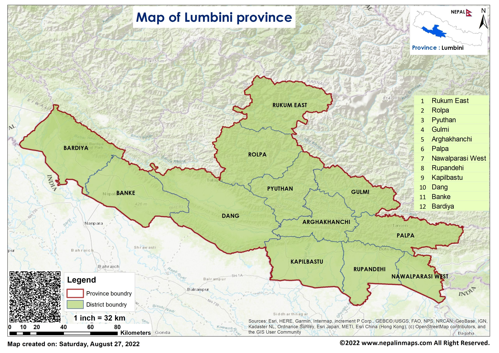

Map

Lumbini Province is a province in western Nepal. The country's third largest province in terms of area as well as population, Lumbini is home to the World Heritage Site of Lumbini, where according to Buddhist tradition Gautama Buddha, the founder of Buddhism, was born.
Lumbini borders Gandaki Province and Karnali Province to the north, Sudurpashchim Province to the west, and Uttar Pradesh and Bihar of India to the south. Lumbini's capital, Deukhuri, is near the geographic center of the province. The major cities in the province are Butwal and Siddharthanagar in Rupandehi district, Nepalgunj in Banke district, Tansen in Palpa district, and Ghorahi and Tulsipur in Dang district.
Lumbini, with an area of 22,288 square kilometers (8,605.44 sq. mi) covers about 15.1% of the country's total area. Lumbini Province is almost the size of US state of New Jersey. The province extends 150 km (93 mi) north to south and about 300 km (186 mi) east to west at its maximum width.